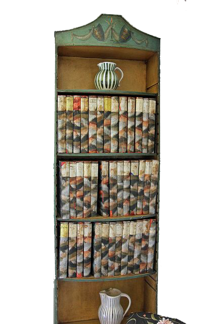

후기 빅토리아 시대 영국 학자 가문에서 태어나 훌륭한 교육을 받았으나, 딸인 버지니아 울프는 다른 오빠와 달리 집안 내에서 가정교육만을 받았다. 그녀는 딸이라는 이유로 학교를 다니지 못하고 집안 교육과 지식을 독학하여 쌓았고 이후에도 지적활동을 활발히 하였다. 정규 교육을 받지도 못 하고 가족사로 인해 신경쇠약과 정신질환을 평생 함께하게 된다. 그럼에도 불구하고 뛰어난 지식과 지성을 보인 버지니아는 '블룸즈버리그룹'이라는 지식인 모임에 들어갔다

울프는 그 동안 남성 작가들이 전통적으로 구사해 온 소설작법에서 벗어나 특유의 '의식의 흐름' 기법으로 남성과 여성의 이분된 질서를 뛰어넘어 단순히 여성 해방의 차원으로는 설명이 부족한 인간 해방의 깊은 문학을 지향했다. 그녀는 끊임없이 글을 썼다.

책 자기만의 방 케임브리지 대학 뉴넘 칼리지에서의 강연을 토대로 한 에세이 <자기만의 방>(1929)은 큰 반향을 불러일으키며 훗날 페미니즘의 교과서로 추앙된다. 날카로운 관점과 뛰어난 지성을 지닌 인물로 위대한 작품들과 서평, 에세이를 쓰기도 했다. 에밀리 브론테의 영향을 받았고 그녀가 살았던 지역을 방문하기도 했다. 그녀는 20세기 '대표적 모더니스트'로서 문학적으로 새로운 시도를 하였을 뿐만 아니라 기존의 남성중심 질서에 문제를 제시하는 혁신가이기도 했다. 그리고 늘 글을 썼고 꾸준히 소설, 평론, 그리고 일기를 썼다.